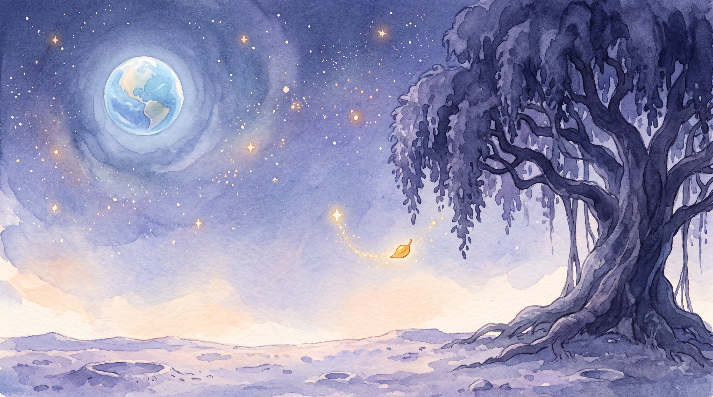
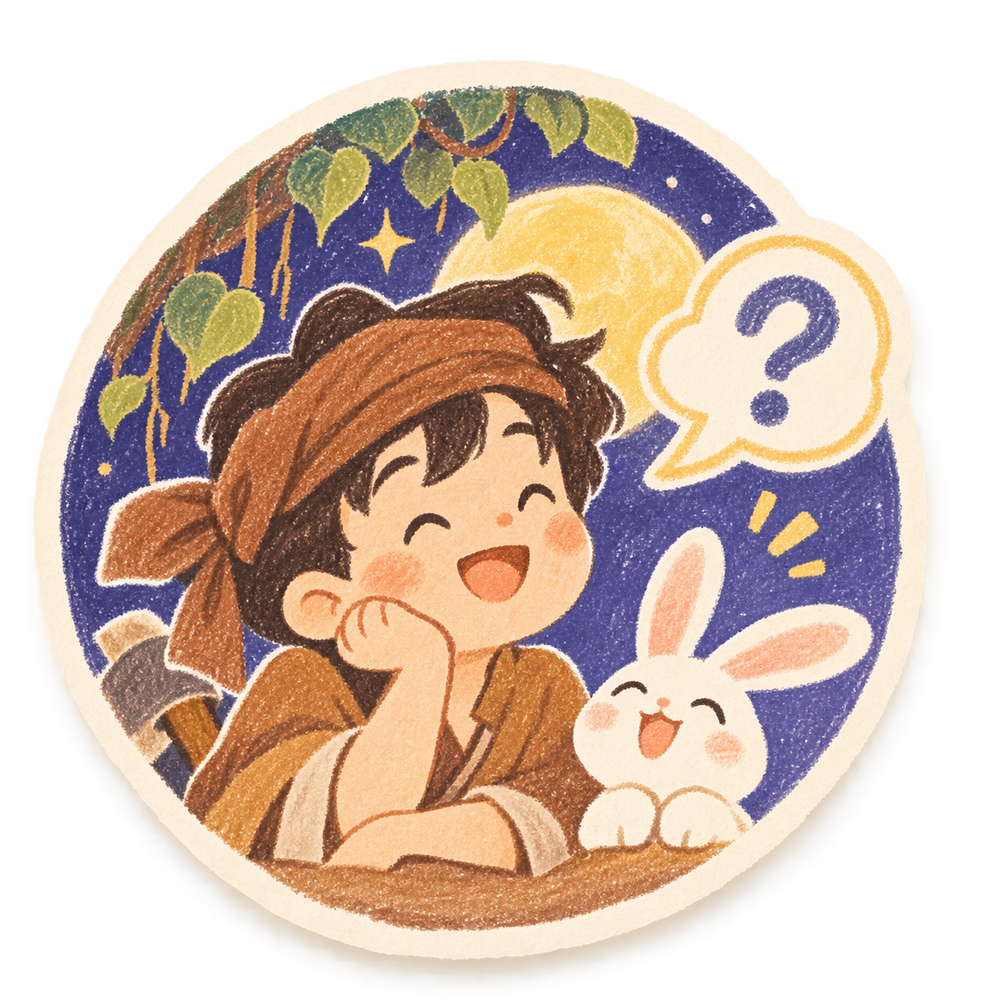

Moon Stories WatercolorA STORY BEYOND THE STARS
THE ROOTSOF THE GALAXY
Old roots hold tight; new dreams take flight.
SCENE 01 — OPENING
This illustration could not load. The complete story is available below.
FIND U IN THE YOUNIVERSE
Old roots hold tight;
new dreams take flight.
Read the complete story
SCENE 01 — OPENING · 01
NARRATOR: Every night, Uncle Cuoi sits under his banyan tree.
NARRATOR: Everyone knows two things about him: he loves telling stories, and he appears every full moon.
SCENE 01 — OPENING · 02
NARRATOR: On the night of the Mid-Autumn Festival, the Moon shone brighter than ever.
NARRATOR: Beneath his ancient Banyan Tree, Uncle Cuoi was telling the Moon Rabbit an old story.
SCENE 01 — OPENING · 03
NARRATOR: Suddenly, a tiny sound broke the silence.
MOON RABBIT: Uncle! What's that sound?
UNCLE CUOI: Tick... tick... Rabbit, I think something is alive out there.
MOON RABBIT: Is this another one of your tall tales?
UNCLE CUOI: Not this time. Come on!
SCENE 02 — THE LITTLE ONE IN THE DUST · 04
NARRATOR: Following the mysterious sound, Cuoi and Rabbit discovered an old explorer standing alone in the lunar dust.
NARRATOR: Long ago, astronauts had come to the Moon, bringing instruments and dreams of discovery.
SCENE 02 — THE LITTLE ONE IN THE DUST · 05
ROVER: Hello? Are you... real?
MOON RABBIT: It talks!
ROVER: I'm ROVER. Once, I helped humans explore the Moon.
SCENE 02 — THE LITTLE ONE IN THE DUST · 06
ROVER: I had an ear for listening to the Moon shake, and a little mirror.
ROVER: And then everyone left. Did they forget me?
UNCLE CUOI: Why would they leave you here?
NARRATOR: Some instruments were left on the Moon to help scientists continue learning about our nearest neighbor.
SCENE 03 — THE ROVER THAT WENT QUIET · 07
NARRATOR: Cuoi and Rabbit guided their new friend toward the ancient Banyan Tree, the guardian of memories.
SCENE 03 — THE ROVER THAT WENT QUIET · 08
BANYAN TREE: Tell me, ROVER. What did your ear hear?
ROVER: I listened for moonquakes and space rocks hitting the Moon.
SCENE 03 — THE ROVER THAT WENT QUIET · 09
ROVER: I worked for about three weeks. Then, one day, my signals stopped.
MOON RABBIT: Only three weeks? Was that all?
SCENE 03 — THE ROVER THAT WENT QUIET · 10
BANYAN TREE: Three weeks was enough to begin something extraordinary.
BANYAN TREE: Your discoveries helped scientists build better instruments for future missions.
SCENE 04 — THE COLDEST NIGHT · 11
ROVER: But now everything is silent.
ROVER: Nobody calls, nobody answers. I think I've been forgotten.
SCENE 04 — THE COLDEST NIGHT · 12
MOON RABBIT: ROVER... is the mirror still working?
ROVER: It's just glass. It has no battery and no wires.
ROVER: It can't call anyone. It can only wait.
SCENE 04 — THE COLDEST NIGHT · 13
UNCLE CUOI: I know that feeling. I tell the truth and nobody believes me.
UNCLE CUOI: Maybe we're all just waiting.
SCENE 05 — A THIN LINE OF LIGHT · 14
MOON RABBIT: Look! A light from Earth!
BANYAN TREE: That's a laser! Scientists are sending light toward your little mirror.
SCENE 05 — A THIN LINE OF LIGHT · 15
ROVER: My mirror? After all these years?
BANYAN TREE: Yes! It reflects the light to Earth, helping scientists measure the distance to the Moon.
SCENE 05 — A THIN LINE OF LIGHT · 16
ROVER: So... I'm still helping them discover something?
BANYAN TREE: Of course. You were never forgotten, little one.
ROVER: Then my story isn't over!
SCENE 06 — FIND YOU · 17
BANYAN TREE: Look, little one. Your discoveries have reached further than you can imagine.
SCENE 06 — FIND YOU · 18
NARRATOR: Far away on Earth, a child was drawing a rover beneath the light of the Moon.
CHILD: Maybe that explorer could be me...
CHILD: Or maybe... YOU!
SCENE 06 — FIND YOU · 19
ROVER: Someone is dreaming about exploring the Moon?
UNCLE CUOI: Yes. And perhaps one day, that child will discover something we have never imagined.
SCENE 06 — FIND YOU · 20
MOON RABBIT: Maybe the next great explorer is right there!
NARRATOR: Every great discovery begins with a curious mind.
SCENE 06 — FIND YOU · 21
NARRATOR: And every dream begins with someone who dares to imagine.
ALL CHARACTERS: FIND U IN THE YOUNIVERSE!
CLOSING — THE ROOTS OF TOMORROW · 22
Your roots remind you where you come from.
Your dreams decide how far you can go.
ROVER is a fictional character inspired by lunar exploration. This story brings together real ideas about moonquakes and laser reflectors; the pictured wheeled rover is not the Apollo 11 scientific instrument package.
Continue the journey ↑